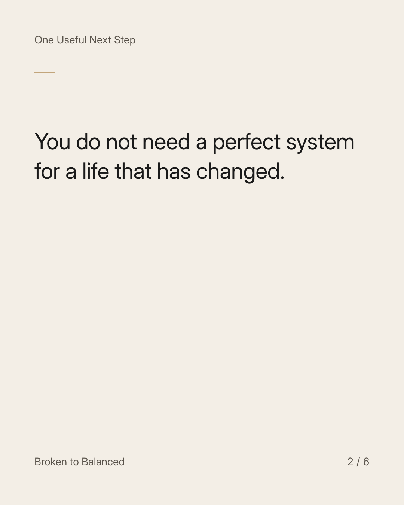
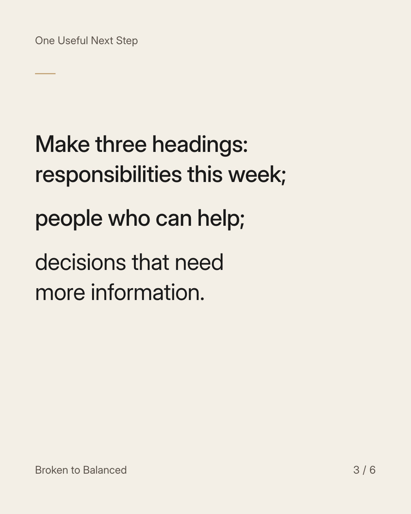
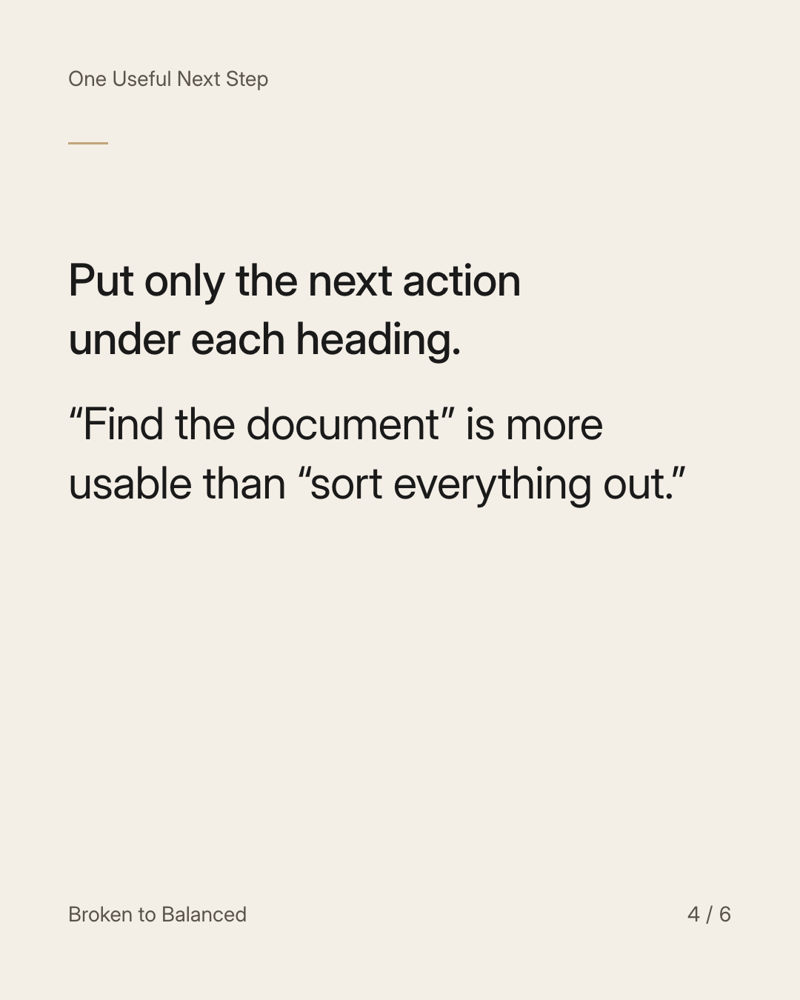
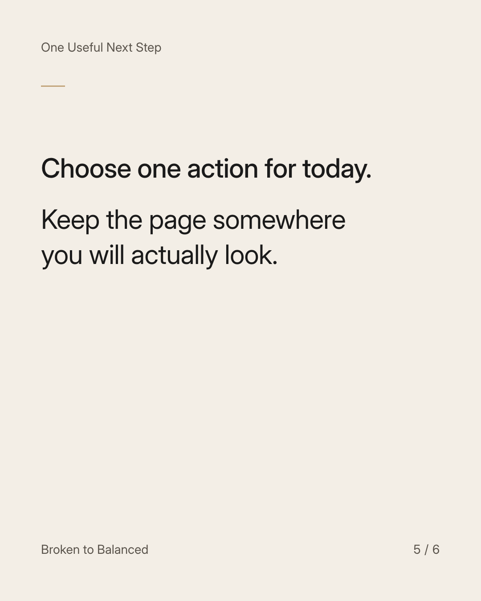
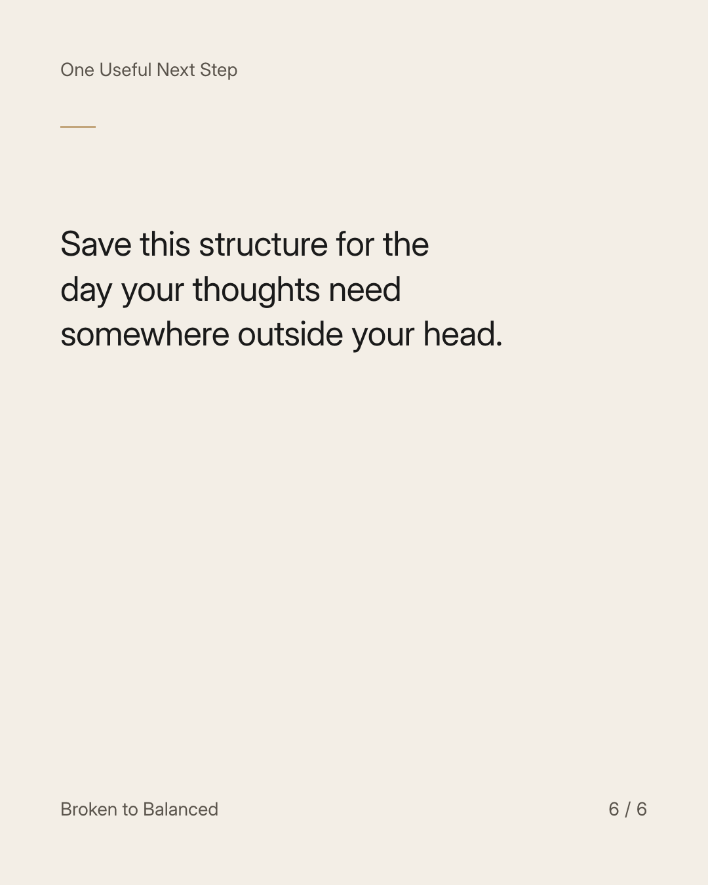

Exact text and accessibility text
Your first rebuilding plan can fit on one page.
Slide 1 of 6. Your first rebuilding plan can fit on one page.


Exact text and accessibility text
You do not need a perfect system for a life that has changed.
Slide 2 of 6. You do not need a perfect system for a life that has changed.


Exact text and accessibility text
Make three headings: responsibilities this week; people who can help; decisions that need more information.
Slide 3 of 6. Make three headings: responsibilities this week; people who can help; decisions that need more information.


Exact text and accessibility text
Put only the next action under each heading. “Find the document” is more usable than “sort everything out.”
Slide 4 of 6. Put only the next action under each heading. “Find the document” is more usable than “sort everything out.”


Exact text and accessibility text
Choose one action for today. Keep the page somewhere you will actually look.
Slide 5 of 6. Choose one action for today. Keep the page somewhere you will actually look.


Exact text and accessibility text
Save this structure for the day your thoughts need somewhere outside your head.
Slide 6 of 6. Save this structure for the day your thoughts need somewhere outside your head.
Exact caption
Plain-text fallback: select and copy the caption.